To set up the Analog Discovery Pro:
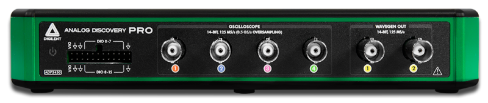
| Recommended operating conditions | Absolute maximum ratings | ||
|---|---|---|---|
| Oscilloscope | inputs | ±50V 1MΩ|15pF | ±50V |
| Wavegen | outputs | ±5V 50Ω 30mA DC | ±5.8V |
| Digital | IOs | 0V / 1.2-3.3V 8mA | ±15V |
| Triggers | IOs | 0V / 3.3V 8 mA | ±15V |
| Digital Voltage | output | 1.2V .. 3.3V 300mA | 0V .. 3.5V |
| Power Supply | input | 19V DC 3.43A | 45W 18.2V .. 19.8V |
The block diagram of the device is the following:
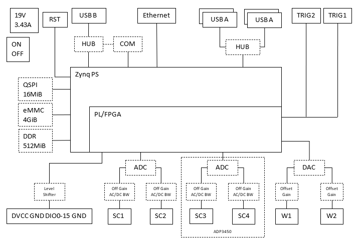
For more information visit the Resource Center.
See Installer Details for information about different command line options to install WaveForms.
See WaveForms for more information on using the WaveForms software.
The unit can be used as instrumentation device over USB and Ethernet with WaveForms application or custom application based on WF SDK.
Standard mode provides traditional WaveForms functionality uses the embedded DDR to transfer and record data.
Linux mode enables the Analog Discovery Pro to be used as a standalone development device as well as an instrumentation device with the included digilent.adept.bridge service. The embedded DDR is instead used to run Linux.
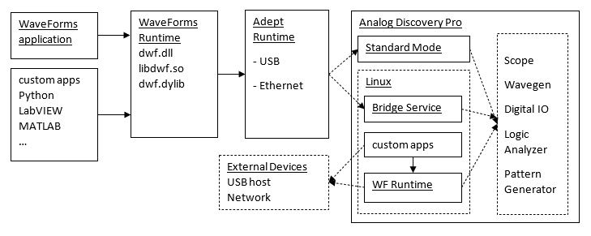
Different Boot Modes for the Analog Discovery Pro are available for alternate configurations and usage of the device.
The Analog Discovery Pro has the following Boot Modes:
The Boot Mode can be changed from WaveForms application's Device Manager, with UBoot command, or from terminal during boot.
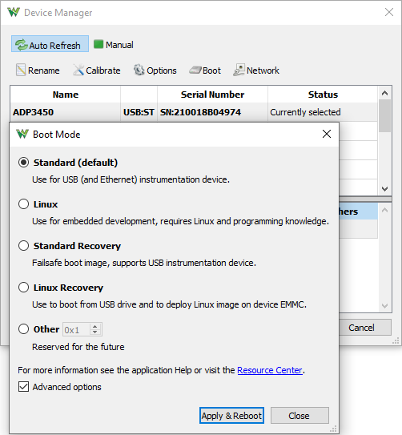
On power-on or reset the Standard Recovery firmware is started. This programs the FPGA and loads the Standard or U-Boot applications. The U-Boot may load the Linux image from the device eMMC or USB flash drive.
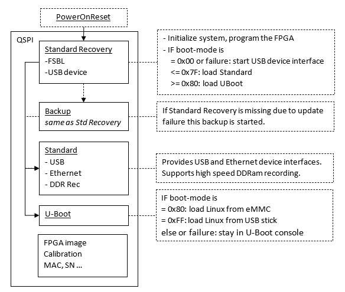
For Standard and Recovery two configurations are available and for Linux one.
The first configuration uses most of the device 512MiB DDR RAM for Oscilloscope and Logic Analyzer capture.
The second or the one available with Linux provides smaller buffers.
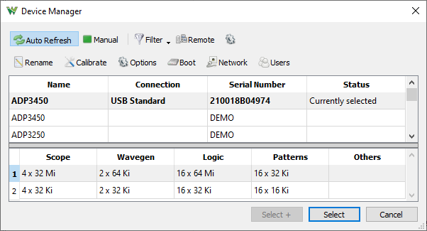
In Standard mode the device boots within 1 second, the USB and Ethernet transfer rates are slightly faster but it does not provide standalone operation or use of the USB host plugs.
In this mode using the first configuration it can capture 128Mi samples from 1-4 channels and 64 Mi sample of 16 bits at 125MHz.
The device will reboot in the following cases:
- when the USB device cable is disconnected or on USB detach, like when the computer goes to sleep
- when the Ethernet cable is disconnected or link goes down for at least 5 seconds and there is not active USB software connection
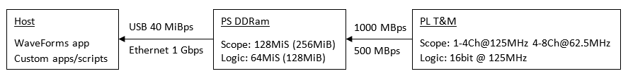
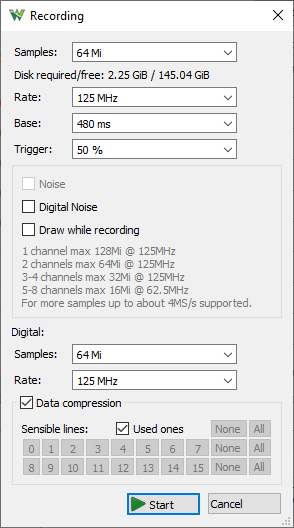
Typical transfer rates and latency:
| Standard | Linux | |
|---|---|---|
| 23MiBps 0.25ms | 28MiBps 0.6ms | |
| 40MiBps 0.25ms | 26MiBps 0.6ms | |
| 56MiBps 0.25ms | 28-39MiBps 0.6ms | |
| 71MiBps 0.25ms | 24-30MiBps 0.7ms | |
| Embedded to Device | 350MiBps 0.02ms | |
| Embedded from Device | 135MiBps 0.04ms |
Typical waveforms per second oscilloscope capture rates:
| Standard USB | 1900 |
|---|---|
| Standard Eth | 2100 |
| Linux USB | 840 |
| Linux Eth | 610 |
| Embedded AXI | 4900 |
| Embedded Eth | 440 |
The USB COM (serial port) provides interface boot process and to Linux terminal at 115.2 kbps, 8 data bits, 1 stop bit, no parity. On Linux the serial port is like: /dev/ttyUSB# and on Windows see the COM port number in Windows Device Manager under Ports (COM & LPT).
To use the embedded Linux:
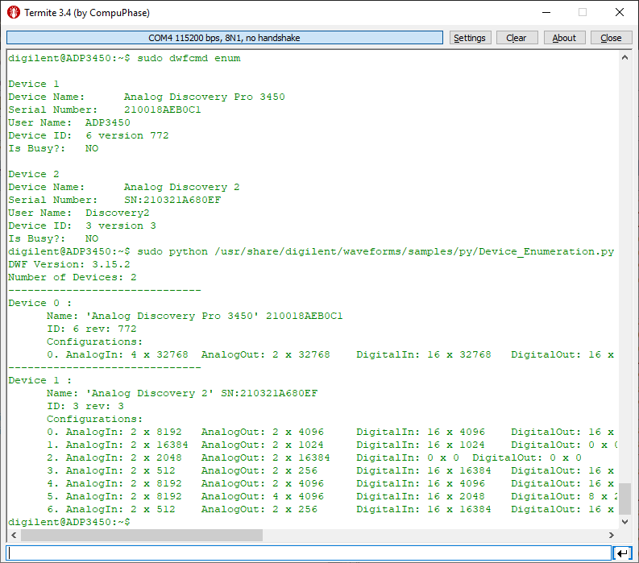
The application and scripts can be developed on computer then ported and run on the device.
The following custom packages are installed by default on the embedded Linux:
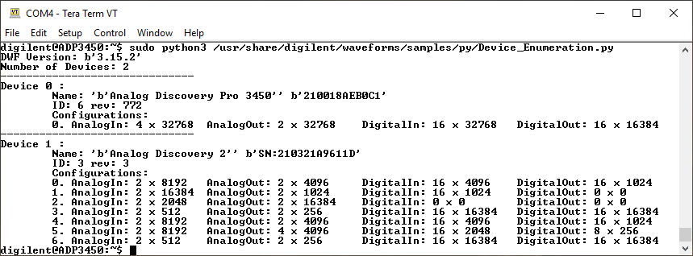
To reprogram the Linux on the device eMMC:
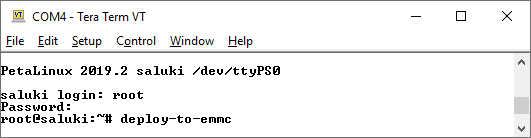
The Network Settings lets you configure the Ethernet port.
The Enable Ethernet interface in Standard Boot Mode recommended to be unchecked if not used to speed up the device boot time.
The Apply these settings on Linux boot should be unchecked when custom IP configuration is used in Linux.
The computer from which the device is used should be connected to the same network. On Windows make sure the network profile is Private.
When Obtain IP address automatically is checked the device will try to obtain IP address from DHCP server, it this fails the specified IP settings are used.
The Use the following static IP address should be checked when fixed IP is required or the device is connected directly to the computer in order to skip auto-configuration to speed up the connection time.
In this case the same subnet but different IP should be configured on the computer port too, like 192.168.2.10/255.255.255.0 and 192.168.2.11/255.255.255.0
Also make sure the subnet address (192.168.2) is not in conflict with subnets of the other ports of the computer.
The values on the left are the stored values and on the right, the read-only fields, show the current values.
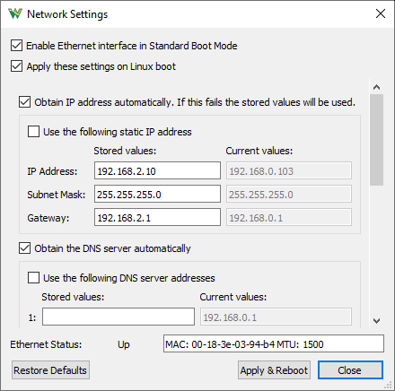
The Remote Devices is intended to manage devices that are not discoverable like on a remote VPN site. It is recommended the IP number to be used since the host name (available with Linux boot) may take more time to resolve. These entries are stored in current users folder unecrypted. For security concern the user name and password can be left empty and these will be asked when connecting to the device.
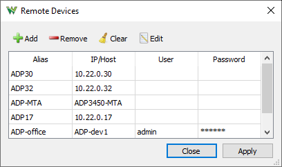
The Device Users lets you manage the accounts on a device. Up to 20 users can be added for a device. When the authentication is enabled connection to the device over network is only allowed with stored account. Login with Admin users can manage the users list. Without Admin right the user is only allowed to use the device and change its password.
When Authentication is enabled only admin users are allowed to edit Users list, Rename the device, Network and Boot settings.
The USB connection to a device is implicit admin, no authentication is required.
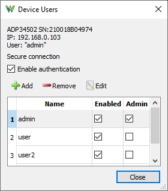
When connecting to a network device with enabled authentication the entered user and password can be remembered locally.
The secure connection, available with Linux boot, uses TLS network communication encryption. This could be important in local network since communication over VPN is encrypted.
The Local Passwords lets you manage the stored device credentials. These are stored in local user directory with encrypted passwords.
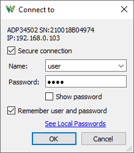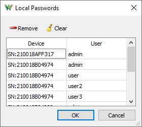
While in Linux Mode, the Analog Discovery Pro can be configured and communicated with over WiFi.
The verified and supported WiFi dongles are listed on the Resource Center.
To connect WiFi dongle use the following command:
# wpa_supplicant -B -i INTERFACE -c <(wpa_passphrase SSID PASSWORD)
Use ip command to see the interface name, like:
ADP3450 login: digilent
Password: digilent
digilent@ADP3450:~$ sudo su
[sudo] password for digilent: digilent
root@ADP3450:/home/digilent# ip a
....
4: wlx000f00b5b0ce:
....
root@ADP3450:/home/digilent# wpa_supplicant -B -i wlx000f00b5b0ce -c <(wpa_passphrase MySSID MyPassword)
root@ADP3450:/home/digilent# ip a
....
4: wlx000f00b5b0ce:
link/ether ##:##:##:##:##:## brd ff:ff:ff:ff:ff:ff
inet 192.168.1.104/24 brd 192.168.1.255 scope global dynamic wlx000f00b5b0ce
valid_lft 7177sec preferred_lft 7177sec
inet6 fe80::20f:ff:feb5:b0ce/64 scope link
valid_lft forever preferred_lft forever
The system frequency is adjustable between 50 and 125MHz. This will be the base frequency used for Oscilloscope, Wavegen, Logic Analyzer and Pattern Generator. Each instrument or channel rate will be derived from this frequency.
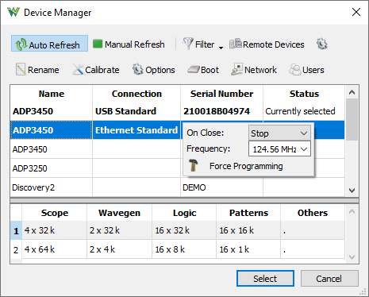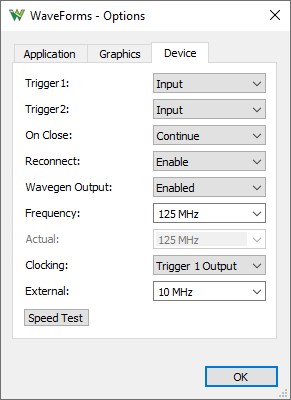
The internal clock can be scaled down and output on Trigger 1 and 2 BNC connectors. The Trigger 1 input can be used as reference clock for the device.
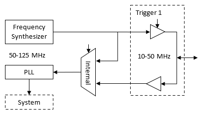
To use external reference clock:
To connect multiple Analog Discovery Pro devices together:
When the Analog Discovery Pro is turned on, a green LED on the front panel will light up, signaling that the internal power rails are operating correctly.
This LED will start blinking at a 1 Hz rate while the selected mode is loading.
Standard Mode only takes about one second to load, so only a single blink will be seen. Booting into Linux Mode takes between 30 to 60 seconds.
The ADP3450 has 4 and ADP3250 has 2 oscilloscope input channels.
Specifications:
| Low Range | High Range | |
| Range | <= 200mV/div | > 200mV/div |
| Peak to peak | 2V | 50V |
| Resolution | ~130uV | ~3.3mV |
| Input voltage | ±2V | ±50V |
| Offset | ±1V | ±25V |
| -3dB w Full | 55MHz | 80MHz |
| -3dB w 20MHz | 20MHz | 20MHz |
| -3dB AC | 12Hz | 12Hz |
The coupling, filter and other options can be selected under channel options in Scope, Spectrum, Network and Impedance Analyzers.


The ADP3450/ADP3250 is equipped with two Arbitrary Waveform Generators channels.
Specifications:
| Low Range | High Range | |
| Amplitude | <= 1V | > 1V |
| Peak to peak | 2V | 10 V |
| Resolution | ~160uV | ~650mV |
| Offset | ±5V | ±5V |
The ADP3450/ADP3250 has 16 digital I/Os (DIO 0-15).
Specifications:
| VIO | 1.2 V .. 3.3 V |
| Input threshold | ~0.7 .. ~1.5 |
| Drive | ±8 mA |